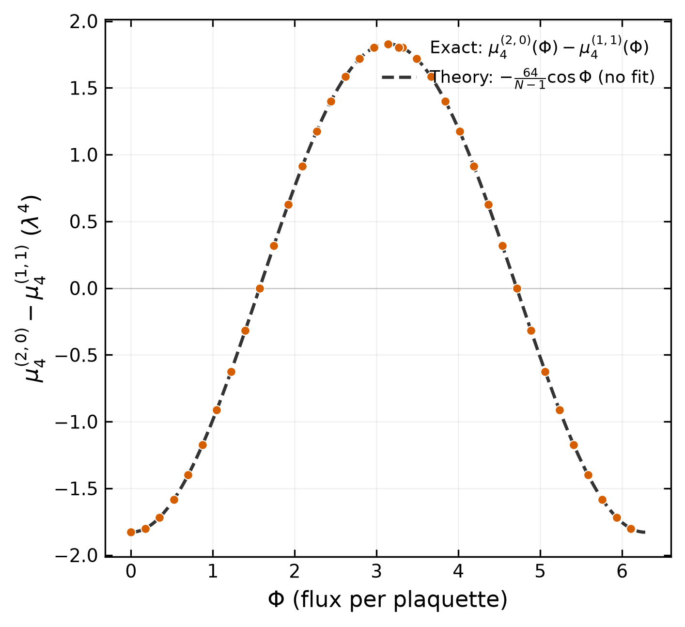
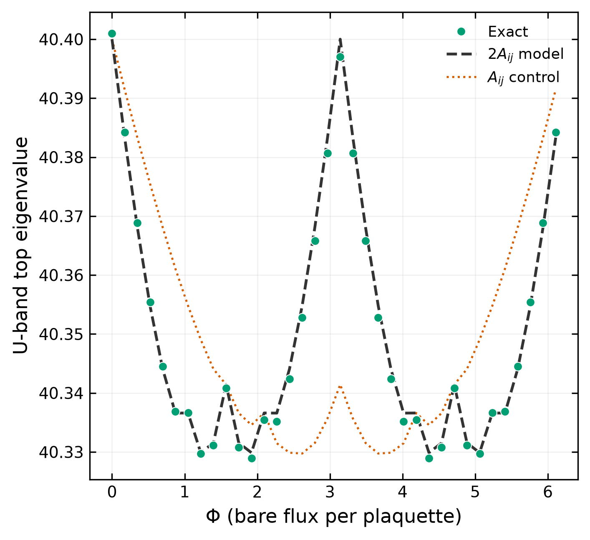

Key exact results (second-moment theorem, four-hop permutation bound, Schrieffer-Wolff orthogonality, doubled doublon phase) are machine-checked in Lean 4 with Mathlib from fermion operators.
Abstract
At strong repulsion, the lowest band of $n$ lattice fermions is the spectrum of the hopping projected onto states without double occupancy, $H_\infty=P_0H_tP_0$. We study its moments on the square lattice and, where possible, any finite graph. (1) For spin-independent Hermitian hopping (no on-site terms) on $N\geq2$ sites, $μ_2=\frac{n(N-n)}{N(N-1)}\sum_{i\neq j}|t_{ij}|^2$ for any spin composition. (2) On any finite graph, $μ_4$ is exactly linear in the same-spin pair count $P_{\rm same}$ (four hops move at most three particles). For uniform hopping on a simple graph with $N\geq4$, $μ_4=A+αP_{\rm same}$ in closed form: the slope $α=-8C_4(N-n)(8N-11n-2)/[N(N-1)(N-2)(N-3)]$ is set by the number $C_4$ of 4-cycles, the intercept, via hard-core bosons, by edge, edge-pair and 4-cycle counts. With arbitrary Peierls phases, $μ_4$ is a spin-independent baseline plus a coefficient times $\sum_C\cosΘ_C$ over 4-cycle Wilson phases. (3) At finite $U$, the second-order Schrieffer-Wolff correction is Hilbert-Schmidt orthogonal to $H_\infty$ on every triangle-free graph, so the band variance has no $1/U$ term; its $U^{-2}$ coefficient is negative at the low fillings computed. (4) Exchange loops carry the ordinary charge-$e$ harmonic, $α\cosΦ_\square$ on $L\times L$ tori, $L\neq4$, while the doublon hopping acquires a doubled phase, $t_de^{2iA_{ij}}$: the second-order single-doublon Hamiltonian is exactly $π$-periodic ($h/2e$) under a boundary twist, and the exact two-electron U-band follows up to $O((2λ)^L/U^{L-1})$. Result (1), the closed form in (2) without phases, the orthogonality in (3) and the doubled phase are machine-checked in Lean 4. Repulsive binding and the pair charge $2e$ are known; new are the exact moments and the derivation of the doubled phase. We make no claim about many-pair phase stiffness, off-diagonal long-range order or superconductivity.
Problem
At strong repulsion, the lowest band of lattice fermions is governed by the hopping projected onto states without double occupancy, H_∞=P_0H_tP_0. The work seeks exact spectral moments of this projected configuration graph and how finite-U virtual doublons and gauge fields modify them.
Approach
Spectral moments are computed as sums over closed walks in the configuration graph, classified by the permutation they induce, which isolates ring exchange and three-cycle contributions. A Schrieffer-Wolff expansion gives finite-U corrections, and Peierls phases give the flux response of the exchange loops and of doublon hopping. Results are checked against exact diagonalization. A subset, including the second-moment theorem, the four-hop bound, the vanishing cross term and the doubled phase, is formalized in Lean 4/Mathlib with H_∞ built from CAR fermion operators.
Figure 3: Sector structure implied by the counting rule, tested by full exact diagonalization of every interacting composition. All panels share the energy axis of (a), E in units of \lambda . In (a,b), color encodes the doublon expectation value \langle N_{d}\rangle on a continuous white-to-green scale (the manuscript’s virtual-doublon color; darker = more doublons), never a proxy for U . In (a,b
Results
μ_2 has a closed form for any spin composition. μ_4 is exactly linear in the same-spin pair count, with a slope set by the number of 4-cycles. The band variance has no 1/U term on triangle-free graphs. Exchange loops carry a charge-e flux harmonic, while doublon hopping acquires a doubled phase, so the single-doublon Hamiltonian is h/2e-periodic. The Lean proofs depend only on the standard axioms.

Figure 10: Exchange contribution to the fourth moment: the same-spin-minus-opposite-spin difference \mu_{4}^{(2,0)}(\Phi)-\mu_{4}^{(1,1)}(\Phi) against the closed-form prediction -64/(N-1)\cos\Phi_{\square} (§ 8 ), n=2 , N=36 ( L=6 ; the horizontal axis \Phi is the plaquette flux \Phi_{\square} ), exact sparse-trace evaluation with a genuine Peierls Hamiltonian, no fitted parameters. Taking this s

Figure 11: Doublon flux response (§ 8 ; energies in units of \lambda ): the exact flux-threaded two-electron U-band’s top eigenvalue against the effective doublon model with doubled Peierls phase t_{d}e^{2iA_{ij}} , compared with an undoubled control t_{d}e^{iA_{ij}} , N=36 ( L=6 ), U=40\lambda , no fitted parameters. This is a standard consequence of the effective doublon Hamiltonian’s charge- 2e